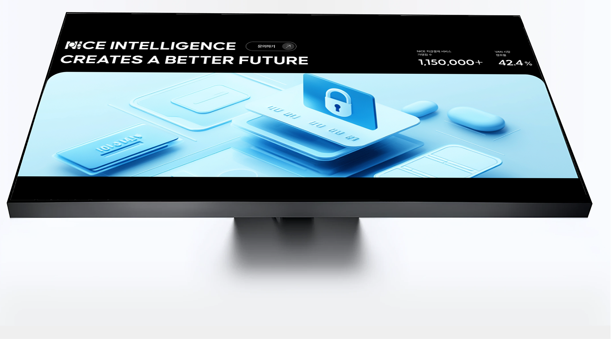
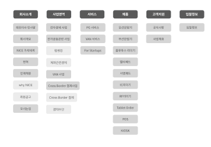
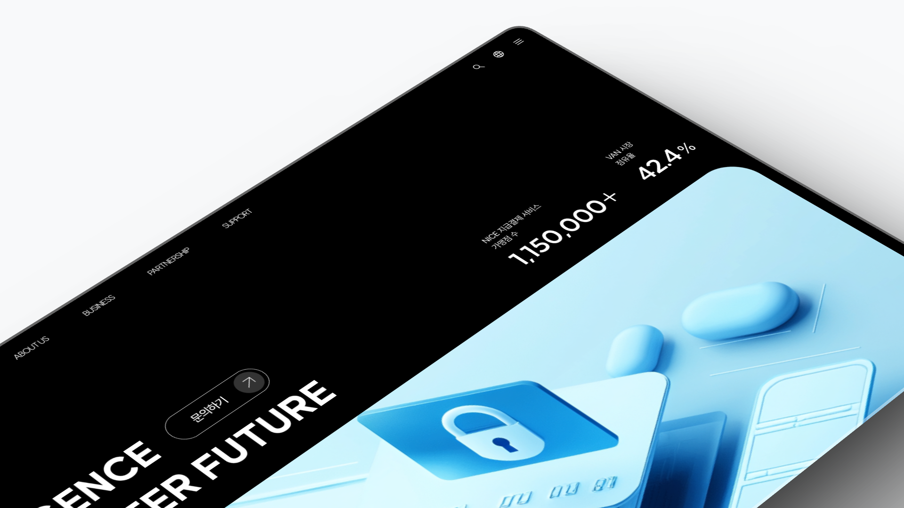
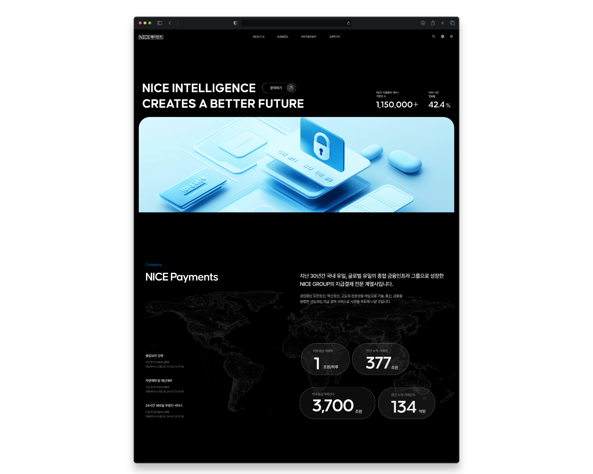

GNB 파편화 (Phenomenon)
메인 페이지 진입 후 GNB 영역에서 즉시 이탈하는 비율이 35%로 매우 높습니다.

기존 웹사이트는 복잡한 구조와 텍스트 중심 데이터 표로 인해 사용자의 목적 지향 탐색이 실패하며, 체류/클릭 경로가 ‘의사결정’이 아닌 ‘탐색’으로 고정됩니다.
메인 페이지 진입 후 GNB 영역에서 즉시 이탈하는 비율이 35%로 매우 높습니다.
메뉴 명칭의 모호성과 과도한 depth로 인해 목적지 탐색 실패 및 인지 혼란이 증가합니다.
텍스트 위주의 데이터 테이블 영역에서 시각화 부재로 해독 난이도가 높고, 정보 습득이 지연됩니다. 특정 서비스 도달까지 평균 클릭 발생률 40% (기획 문구 기준).
경쟁사 UX 패턴과 페르소나 기반 Pain Point를 통해, 의사결정 중심 UX로 리빌드하기 위한 우선순위를 도출했습니다.
복잡한 메뉴 구조를 직관적이고 단순하게 개선해 탐색 비용을 줄입니다.
텍스트 나열 대신 핵심 요약 + 비주얼 요소로 ‘읽는 UX’를 ‘결정하는 UX’로 전환합니다.
톤앤매너, 컬러, 비주얼 아이덴티티로 안정감을 전달해 ‘문의하기’까지 확신을 쌓습니다.
주요 버튼(가입/문의)을 일관되게 노출해, 사용자의 최종 전환을 예측 가능하게 만듭니다.
페르소나별 행동 동기는 다르지만,
결제/신청까지 도달하기 위해서는 "빠른 이해 + 신뢰 근거"가 필요합니다.
대학생 · 모바일·UX 수업 수강
모바일 네이티브 세대 — 빠르고 심플한 UX 선호
간편 인증, 직관적 UI, 빠른 비교
복잡한 메뉴, 범람하는 정보로 찾기 어려움
IT 기획자 · B2B 서비스 도입 검토
기획 담당 — 업무 효율과 보안·정책 확인이 핵심
서비스 기능 범위, 보안 정책, 고객 지원 체계
분산된 정보로 전환 피로, 긴 비교 시간
카페 운영 · 소상공인
자영업자 — 온라인 연동보다 빠른 실행이 중요
간결한 가이드, 즉시 문의, 실무용 솔루션
불분명한 용어, 복잡한 절차로 인한 실행 포기
기존에는 회사가 제공하는 결제 서비스(SW)와 단말기(HW)가 ‘사업영역, 주요서비스, 제품’ 3개의 메뉴로 찢어져 있어 방문자가 길을 잃기 쉬웠습니다.
이를 해결하기 위해 비슷한 비즈니스 정보들을 [BUSINESS]라는 하나의 큰 묶음으로 합쳤습니다. 또한, 단순한 게시판 같았던 입찰정보를 [PARTNERSHIP]으로 승격시켜 B2B 기업의 핵심인 ‘신뢰(Trust)’를 전면에 내세웠습니다.
메뉴 개수를 4개로 줄인 덕분에 시각적으로 훨씬 여유로운 상단 네비게이션 바(GNB)를 구축할 수 있었습니다.
마우스를 올렸을 때 전체 비즈니스 포트폴리오가 한눈에 펼쳐지는 풀 드롭다운(메가 메뉴) UI를 적용하여, 방문자가 클릭 한 번 없이도 “이 회사가 어떤 결제 수단과 기기를 파는지” 즉각적으로 인지하도록 설계했습니다.
1차 메뉴 6개 아래로 하위 항목이 과밀·장문으로 쌓이는 구조입니다. 열(특히 회사소개·사업영역·제품)이 길수록 스캔·탐색 부담이 커집니다.

히어로에서 제시한 비즈니스 임팩트를 기술적 근거로 증명하는 Trust-Layer는, 브랜드 스토리와 보안/기술 인증, 채용, Contact까지 연결됩니다. 또한 Company / Support / Inquiry 영역에서 서비스 탐색을 해결 중심으로 정리합니다.
사용자가 “왜 믿어야 하는지”를 즉시 이해할 수 있도록, 핵심 신뢰 근거를 하나의 시선 흐름 안에 배치합니다.
AS-IS는 회사 소개/사업/지원이 파편화되어 클릭 뎁스가 깊어집니다. TO-BE는 목적 기반으로 그룹화해 탐색 비용을 줄입니다.
결제 채널을 한 번에 인지하고 다음 행동(문의)으로 연결.
시장 점유율 및 신뢰 근거를 카드형으로 시각화.
FAQ 중심 문제 해결형 모듈로 신청 포기 리스크를 낮춤.
문의하기 CTA를 고정해 전환 루프를 안정화.

‘비즈니스 신뢰’를 기술적으로 증명(Trust at Scale)하고, 서비스/FAQ를 문제 해결 중심 모듈로 재구성합니다. 메인 화면(01)은 히어로·하위 구간을 스태거드로 풀어 포트폴리오형 시선 흐름을 만듭니다.
기존의 인사형 구조 → 기술 신뢰를 상징하는 3D 보안 비주얼 + 실적 기반 메시지(CTA 영역 통합).

단조로운 정보 나열 → 사업 영역을 카드형 UI로 구조화하고, 파트너 로고를 브랜드 스토리 형태로 배열.
서비스 페이지를 ‘탐색형’에서 ‘문제 해결형’으로 전환하고, FAQ/문의 연결성을 강화.
AS-IS는 파편화된 나열형 정보 구조로 인해 High Bounce Risk가 발생합니다. TO-BE는 데이터 확신형 흐름으로 클릭 뎁스를 줄이고, 기억 부하를 낮춥니다.
탐색 중에도 최종 전환(문의하기)을 계속 노출해 ‘결정’을 고정합니다.
서비스 가치를 체험하게 하고, 텍스트 해독 비용을 비주얼 이해로 대체합니다.
실시간 지표와 시장 점유율/기술 신뢰도를 통해 ‘확신’을 완성합니다.
목표는 ‘빠른 이해’가 아니라 ‘빠른 결정’입니다. IA에서 제시한 전환 경로 단축(클릭 뎁스 직선화), 유사 정보 그룹화로 인지 과부하를 낮추는 방향으로 설계했습니다.
TO-BE의 핵심은 1) 복잡한 GNB 제거, 2) 데이터 확신형 메시지(Trust-Layer), 3) 카드형 정보 시각화로 해독 지연을 줄이는 것입니다. 결과적으로 사용자의 사고 과정을 직선화하고, 목표 지점까지의 클릭 뎁스와 머무름 시간을 합리화합니다.